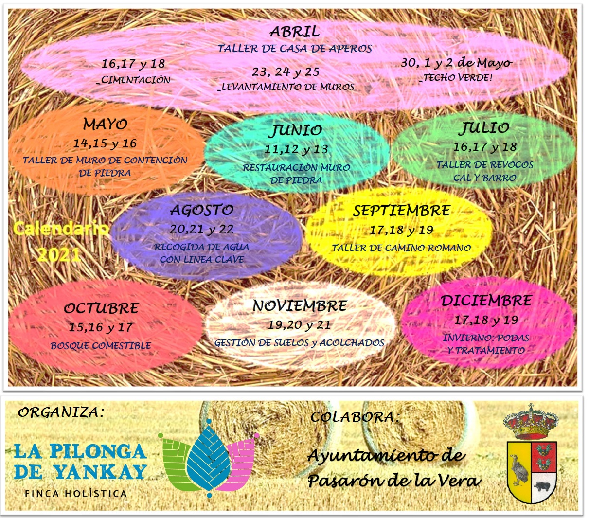

CALENDARIO 2021
De la necesidad de construir para el desarrollo del proyecto y de compartir nuestra experiencia, nacen estos talleres de la mano de Luis de Huerta el Chorrillo (bioconstructor, permacultura, agroecología…).
Cada taller va a cubrir una necesidad de la finca.
Realizados en situación de obra y ejecución de proyectos reales que quedarán en uso, el objetivo de los talleres es enseñar: técnicas, metodología, formulación (por ejemplo en el caso de revocos y hormigones) para adquirir habilidades, conocimientos para aplicar a los proyectos particulares de cada uno.
Explicaremos desde la base porqué escoger el realizar esa acción, os daremos las claves para adaptar los conocimientos adquiridos a vuestros proyectos.
Somos conscientes y coherentes con la situación actual, conocedores de la necesidad de aprender para construir con nuestras manos y también del compartir sabiduría que nos da el reunirnos;
*Tráete tu autocaravana, tu tienda de campaña, tu comida…
*Pero también tenemos la opción de alojarte, proporcionarte comida para la estancia, duchas…
*No queremos que te quedes fuera del aprendizaje y experiencia, podemos hacer algún trueque!!
Nuestros talleres son de 2 días, dando comienzo los viernes a mediodía y finalizando el domingo a mediodía (entre 18-20 horas de aprendizaje).
El precio del taller es de 80€ y un mínimo de 5 personas, pero si llegamos a las 10 personas lo bajamos a 60€.. con este gesto nos abrazamos aún más!
Luis Velasco
Comparto el tiempo de vida y trabajo dedicado a la agroecología y la bioconstruccion .
Soy la 4 generación de hortelanos en la Huerta del chorrillo, donde como mis antepasados hacemos junto con otras personas atraídas por este espacio singular del que Formamos parte lo que ahora se conoce como agroecología y que el bisabuelo Plácido ya practicaba con los mismos principios de usar las condiciones naturales del suelo y recursos hidricos ,respeto del entorno y aprovechamientos de los recursos que nos rodean sabiendo que si los cuidamos nos darán alimentos para el cuerpo y el alma.
Ahora buscamos la confluencia de la agroecología con la permacultura, buscando las sinergias entré la parte más social y de grupo de la agroecología y el enfoque de diseños de espacios de la permacultura.
En bioconstruccion como en agroecología sin saberlo estamos desde siempre soy la 3 generación de hortelanos/carpinteros, desde mi abuelo que trabajaba la madera de los olmos que rodean la Huerta.Nuestro conocimiento del trabajo de la madera es bastante holistico desde la ebanisteria (muebles diseñados en nuestro taller estan en medio mundo,Paris,California,Irlanda,Golfo Persico) carpinteria de todo tipo, extructuras de tejado ,casas..En los últimos años fuimos introduciendo en nuestros trabajos de madera conceptos de bioconstruccion y como siempre con apoyo de otras personas pusimos en marcha el proyecto : Bala-box.com de prefabricados de paja sistema con el que ya hay costruidas unas cuantas casas en España.
En estos años fuimos adquiriendo experiencia en distintas tecnicas empleando : barro,piedra,hormigones y morteros de cal ......que usamos en las obras que hacemos ;desde hace unos años facilitamos estos saberes adquiridos en obras reales y en contacto con profesionales en talleres y cursos .
Colaboró junto con otras personas en el impulso de proyectos de permacultura , agroecología ,agroganaderos.
Procuramos ir sumando saberes y experiencias de todos los talleres, siempre se da intercambio en los dos sentidos, entre los que asisten a los talleres y los que los facilitamos .